27/09/2026 - Ray Tracing Soft Shadows
Vulkan rendering
experiments and
light graphics
theory
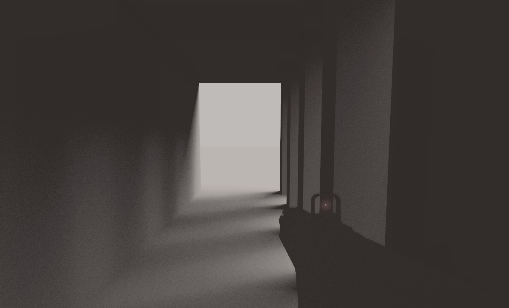
Cascade Shadow Maps are a great technique, but the code for building and switching between the cascades can get unpleasant. There are also issues around different resolutions/filtering techniques on each cascade introducing seams and discontinuities. There are of course ways of managing these issues, but modern game engines are increasingly moving to ray tracing even where it is not supported in hardware and I felt it was time I did the same.
Shadows at the high level are occluded areas that receive less light from a given source. The simple case assumes occluded areas are solid surfaces and receive zero contribution from the light source:
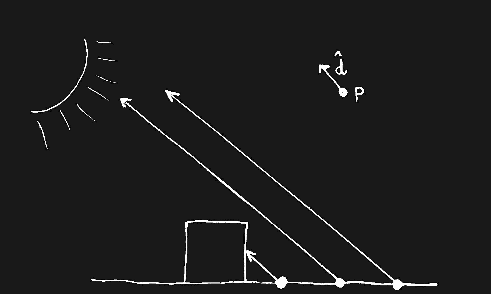
This gives us what is known as ‘Hard Shadows’. These are trivial to compute in terms of ray tracing, as we can just perform a ray intersection test between the surface and the light position. If that ray hits anything then the surface is in shadow. This is the mathematical operation that is emulated in graphics pipelines with shadow mapping, where depth buffers are rasterized in place of ray tracing operations to keep things cheap, with the view matrix of the light being used elsewhere to test for occlusion.
Looking at them in a render though, the results are crisp but visually unsatisfying and not particularly physically accurate:
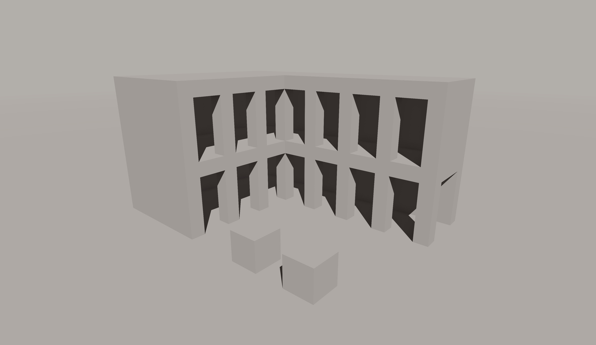
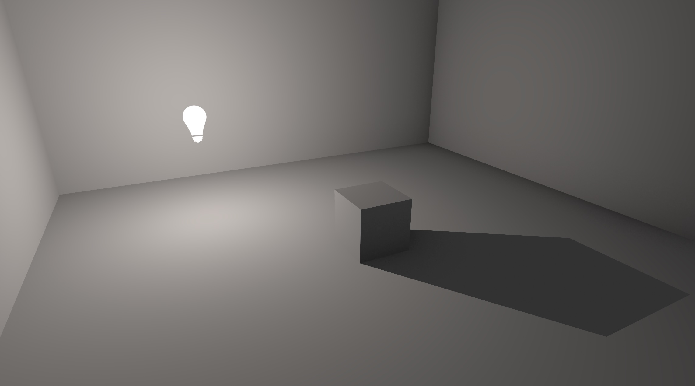
This is because in the real world light sources are not single euclidian points. They omit light from an area and attempting to model something like a lightbulb, which omits light from a coiled filament and refracted through a glass container, quickly becomes daunting. To keep things simple, lets assume our light source is not a single point, but a sphere defined by a point and a radius. Real shadows are made up of two primary areas, the umbra (the space fully occluded by the object, reciving no light) and the penumbra (the space partially occluded by the object, possibly recieving some bounced or scattered light):
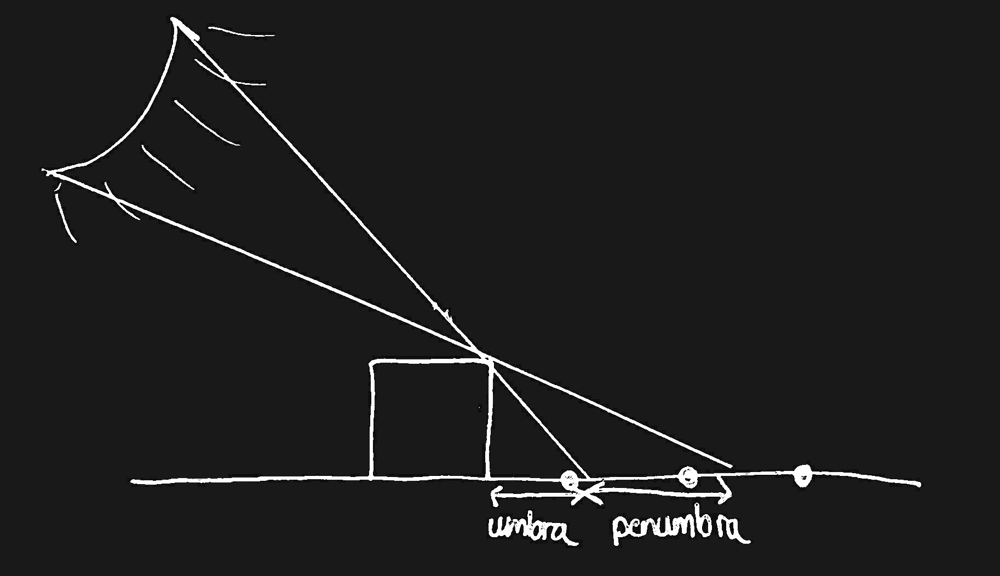
Considering this from the perspective of shading a pixel, we can represent this by taking pseudo-random rays offset from the vector to the light, and using an average occlusion value from each of these rays gives us a reasonable approximation of the soft shadow phenomenon:
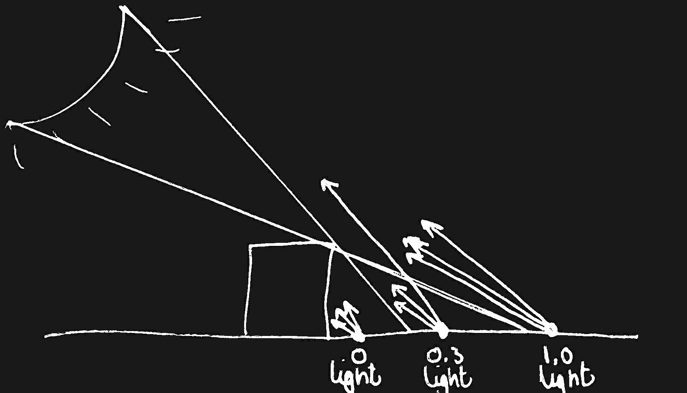
How exactly to compute these random vectors is a dense and technical topic, with many naive approaches that achieve something usable with acceptable runtime cost. Though imperfect in terms of distributions, clustering and concentration of samples, a decent way to generate some random directions in a hemisphere looks something like this:
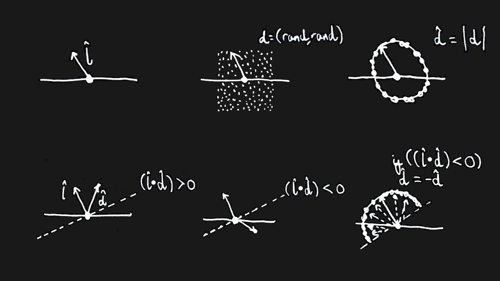
Generating a field of random points between -1 and 1, and normalizing them gives us random points on a sphere, and using a simple dot product we can detect obtuse vectors and invert them into the desired hemisphere.
Implementing this in my Vulkan engine gives shadows that are far more visually interesting, with behaviours and characteristics that most people would consider more realistic than basic hard shadows:
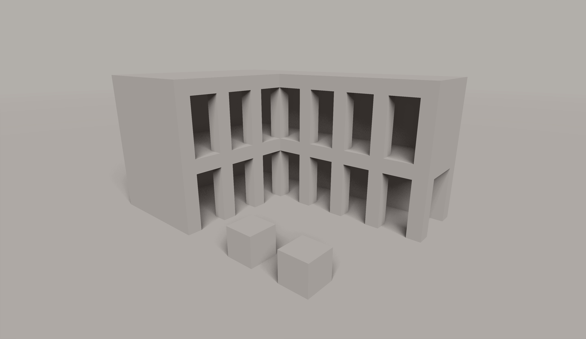
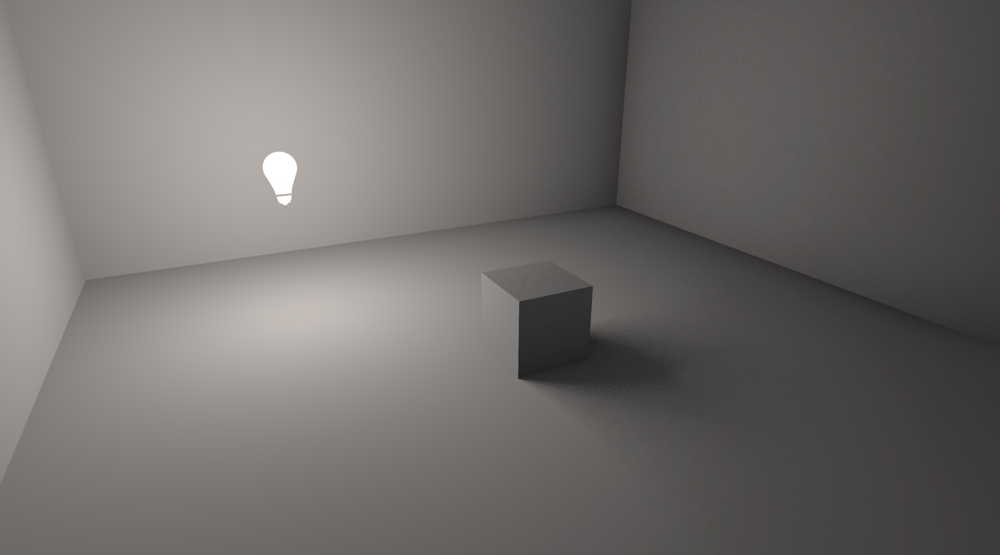
While softer shadows aren't impossible to achieve in raster pipelines, the code for doing so with ray tracing is far more intuitive and robust. Not only do they look graceful, but they have none of the complications of raster shadow mapping. Issues like shadow acne, surface biasing, and aliasing all vanish completely here, and we get a simple calculation that is per-pixel and handles any viewing distance or angle you can throw at it:
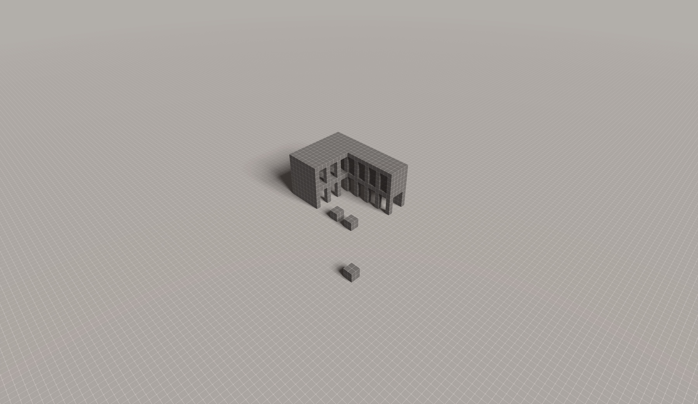
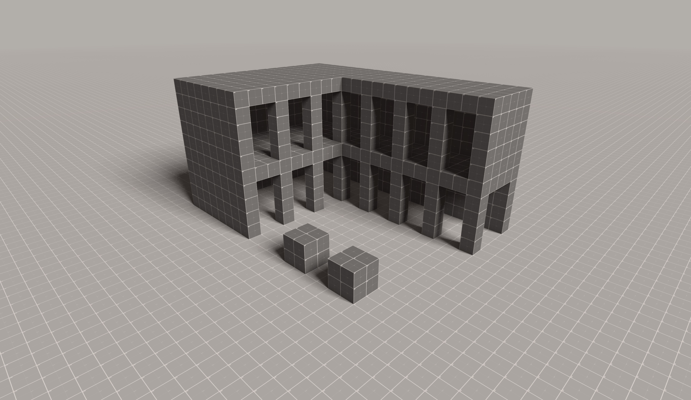
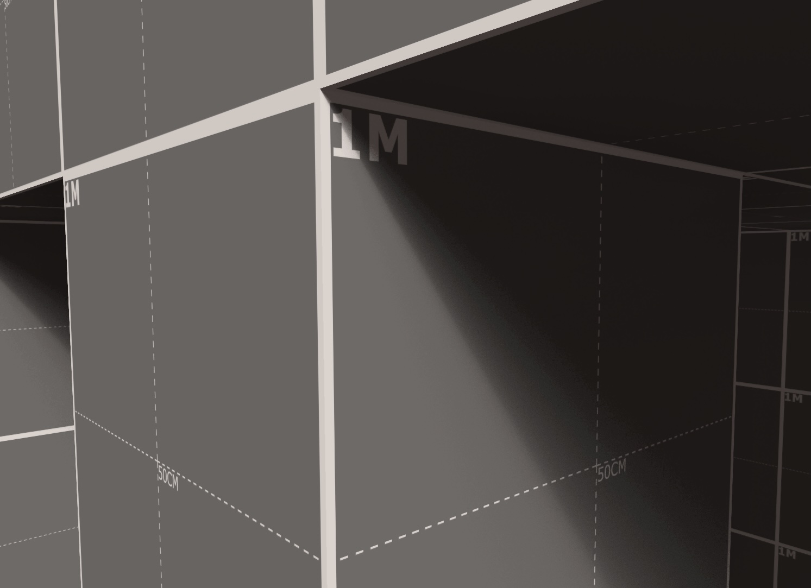
The implementation shown here currently runs in real time on a modest ARM GPU, but it does so via intersecting rays against a scene made exclusively of Axis Aligned Bounding Boxes. In the future, I aim to expand this tech demo to use this existing structure as a Top Level Acceleration Structure/TLAS, and support triangle meshes via Signed Distance Field/SDF ray marching.